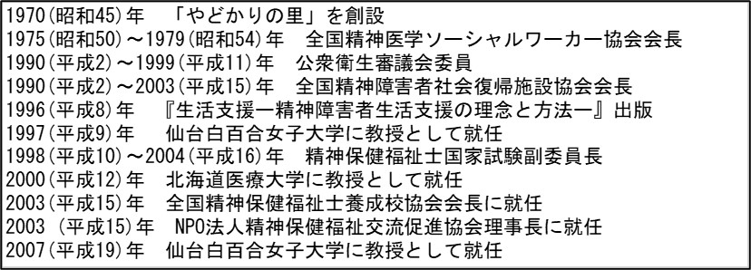

序章 研究の構成
Ⅰ. 研究の背景
わが国における精神保健医療福祉の担い手は多様化している。2004年9月の「精神保健医療福祉の改革ビジョン」厚生労働省(2004)「精神保健医療福祉の改革ビジョン」では、保健医療福祉関係者や行政に加えて、当事者や当事者家族、地域活動関係者、雇用の関係者、教育の関係者、メディア関係者も精神保健医療福祉の担い手としてその役割が明示された。特に、当事者性を活かしたピアサポートの更なる活用は、2014年7月の「長期入院精神障害者の地域移行に向けた具体的方策の今後の方向性」でも検討されている。
この流れの中で、精神保健医療福祉専門職は、どのように他領域の専門職(当事者や家族のピアサポートも含む)との協働の中で学び合えるかということが課題となってくる。そこで、本研究ではその示唆は先人の足取りにあると考え、精神保健医療福祉専門職の一つである精神科ソーシャルワーカーの先人となる谷中輝雄(1939～2012)の研究を行うこととした。
谷中は1970年に精神障害のある人を地域で支える「やどかりの里」を埼玉に創設し、その実践経験より『生活支援―精神障害者生活支援の理念と方法―』(1996)を出版し、1999年に「精神保健及び精神障害者福祉に関する法律」に法定化された「精神障害者地域生活支援センター」構想を提言した人物である。また、谷中は精神医学ソーシャルワーカー協会(現精神保健福祉士協会、以下P協会と略す)の理事長や仙台白百合女子大学及び北海道医療大学の教授等にも就任している。以下表1は、谷中(2008)谷中輝雄(2008)「生活支援の形成過程」『社会福祉研究』101, 80-87.の文献を参考に、谷中の略歴をまとめた表である。
表1 谷中輝雄略歴
これらの活動の中で、精神障害のある当事者や当事者家族、また他の支援者と共に精神科ソーシャルワーカーとしての価値を形成及び発信し、その後の精神保健医療福祉の展開に大きな影響を与えていった。
先行研究では、この谷中の精神科ソーシャルワーカーとしての価値形成に影響を与えた人物として、哲学者の早川進の名が多くあげられている(阿部好恵, 2003阿部好恵(2003)「やどかりの里における『ごくあたりまえの生活』に関する一考察」『響き合う街で』27, 66-82., pp.71-77, 坂本智代枝, 2005坂本智代枝(2005)「精神障害者の地域生活支援の思想形成に関する研究(1)ーやどかりの里の生活支援の理念形成の下支えをした思想ー」『大正大學研究紀要ー人間學部・文學部ー』90, 171-176., pp.173-172, 宗野政美, 2013宗野政美(2013)「『生活支援の考え方』について」『響き合う街で』65, 3-9., p.5)。
また、精神障害のある当事者、そして家族の影響が示された文献もある(藤井達也, 2004藤井達也(2004)『ともに生きる歩みー家族・研究者・実践家としてー』やどかり出版., pp.48-53, 江間由紀夫, 2014江間由紀夫(2014)「『生活支援論』再考ー谷中輝雄の遺したものー」『東京成徳大学研究紀要ー人文学部・応用心理学部ー』21, 45-53. , p.48, 稲垣佳代, 2015稲垣佳代(2016)「『失敗』に対する認識の変化が可能にしたソーシャルワークの価値に基づく就労支援ーやどかりの里における谷中輝雄の実践からの考察ー」『高知県立大学紀要』65, 95-104. , p.98)。
その他、谷中と共に「やどかりの里」を支えた坪上宏の影響が示された文献もある(江間由紀夫, 2014江間由紀夫(2014)「『生活支援論』再考ー谷中輝雄の遺したものー」『東京成徳大学研究紀要ー人文学部・応用心理学部ー』21, 45-53., p.47,52)。
一方で、「1970(昭和 45)年にやどかりの里はスタートしていますが、当時から『ごく当たり前の生活』ということを先輩たちは求めていました」という記録もある(増田一世, 2014増田一世(2014)「谷中輝雄氏の歩みーごく当たり前の生活を求めてー」『精神保健福祉』45(3), 252-257., p.252)。
そして、谷中自身も自らの個人史を振り返る上で、家族や教会学校教師時代の教え子、友人の発症(谷中輝雄, 1995谷中輝雄・石川左門・丸地信弘・藤田雅美・秋田昌子・増田一世・松田正己(1995)『インターフェースの地域ケアー語り合い, 響き合い, 共に生き, 創り合うー』やどかり出版., pp.3-6)、大学の恩師である重田信一や遊佐敏彦(谷中輝雄, 1995谷中輝雄・石川左門・丸地信弘・藤田雅美・秋田昌子・増田一世・松田正己(1995)『インターフェースの地域ケアー語り合い, 響き合い, 共に生き, 創り合うー』やどかり出版., pp.10-11)、岩本正次(谷中輝雄, 2003谷中輝雄(2003)「岩本正次とやどかりの里」谷中輝雄編『意識生活学の提唱ー岩本正次の世界ー』(pp. 334-50), やどかり出版.)の影響も示している。
これらの文献からは、谷中の精神科ソーシャルワーカーとしての価値形成には多様な影響が及んでいたことが伺える。
では、谷中はこうした影響をどのように受け、精神科ソーシャルワーカーとしての価値を形成していったのか、またその価値はどのように再び人々と共有されていったのか、本研究ではこの相互作用の具体的な過程を辿るため、谷中の価値形成過程に焦点を当てることとした。このことは、今後の精神保健医療福祉領域における学び合いを考える上での一助になると考えられる。
Ⅱ. 研究目的
本研究においては、谷中の精神科ソーシャルワーカーとしての価値形成及び共有の過程を明らかにすることにより、今後の精神保健医療福祉に取り組む人々の学び合いの未来像を展望することを目的とした。
Ⅲ. 研究の方法と倫理的配慮
本研究は、文献調査とインタビュー調査によって行なった。
文献調査では、「谷中はどのように精神科ソーシャルワーカーとしての価値を形成したか」というリサーチクエスチョンを置き、284の文献を通してその過程を分析した。文献調査の実施にあたっては、早稲田大学の研究倫理教育を受講し、憲章及びガイドラインを遵守している。 文献調査の結果は, 第1章に示す。
インタビュー調査では、「谷中はどのように精神科ソーシャルワーカーとしての価値を共有したか」というリサーチクエスチョンを置き、谷中と生前に関わりのあった25人へのインタビューを通してその過程を分析した。インタビュー調査の実施にあたっては、早稲田大学の人を対象とする研究に関する倫理審査委員会の承認を得ている【承認番号:2017-195】。インタビュー調査の結果は第2章に示す。
以上の調査を踏まえ、終章に本研究の結論を示すこととした。
Ⅳ. 研究の視点
本研究の構想は、近年の聖徳太子研究の動向より知見を受けた。聖徳太子を英雄と偶像化するのではなく、厩戸皇子として環境との相互作用に焦点を当てた視点は、史実を今後の展望に活用する上で有効であると考えられるからである(石井公成, 2016石井公成(2016)『聖徳太子ー実像と伝説の間ー』春秋社. )。また、価値研究とした理由は、その理念ごとに焦点を当てた松下幸之助研究に知見を受けた(加護野忠男, 2016加護野忠男(2016)『松下幸之助ー理念を語り続けた戦略的経営者ー』PHP研究所.)。